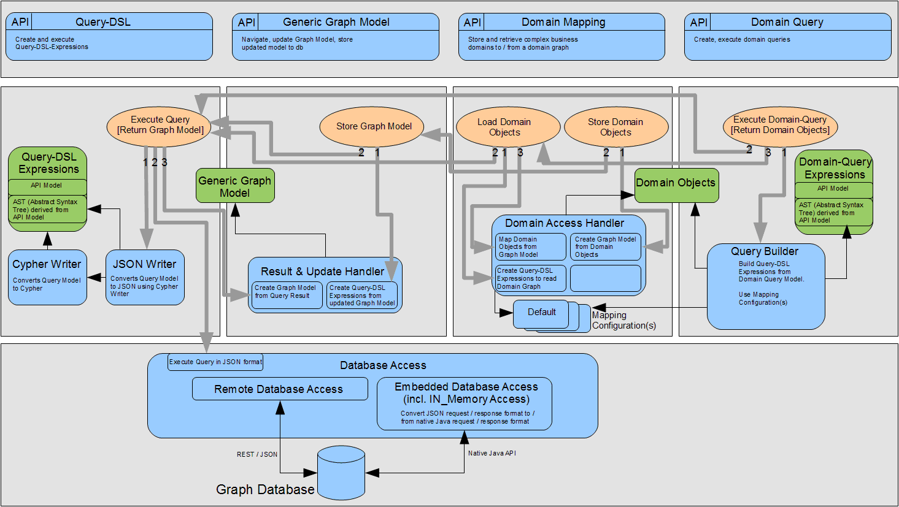

The following diagramm provides an overview of JCypher's core components and how they interact.

At the top of the diagram you find the API layer. It is the layer which exposes the programming interface. It is divided into a couple of distinct APIs, each one providing access to
graph databases at a different level of abstraction.
The components arranged below the API layer expose a model and one or more actions for every distinct API. The models are drawn as green rectangles,
the actions are drawn as orange ovals. Each API allows to manipulate (create, update, delete) elements of the respective model, and it allows to perform action(s)
on behalf of the modified model.
The distinct APIs are:
Domain Query
Allows to formulate queries on domain objects or their types respectively (instead of formulating queries on nodes and relations of a graph).
The true power comes from the fact that the 'graph' of domain objects is backed by a graph database (Neo4J).
It allows to execute powerful queries on your business domain in a performant way, because the queries are actually performed against the graph database.
The components at the middle layer implement the core functionality of JCypher. They interact with each other in order to perform the tasks they are responsible for.
You can follow the gray arrows in the diagram which are rooted at actions (orange ovals) in order to see how actions are performed by invoking functionality
provided by different components. The call order is given by the numbers at the root of each call (gray arrow).
At the bottom of the diagram you find the Database Access component.
It provides access in a uniform way to remote as well as to embedded graph databases (including in-memory databases).